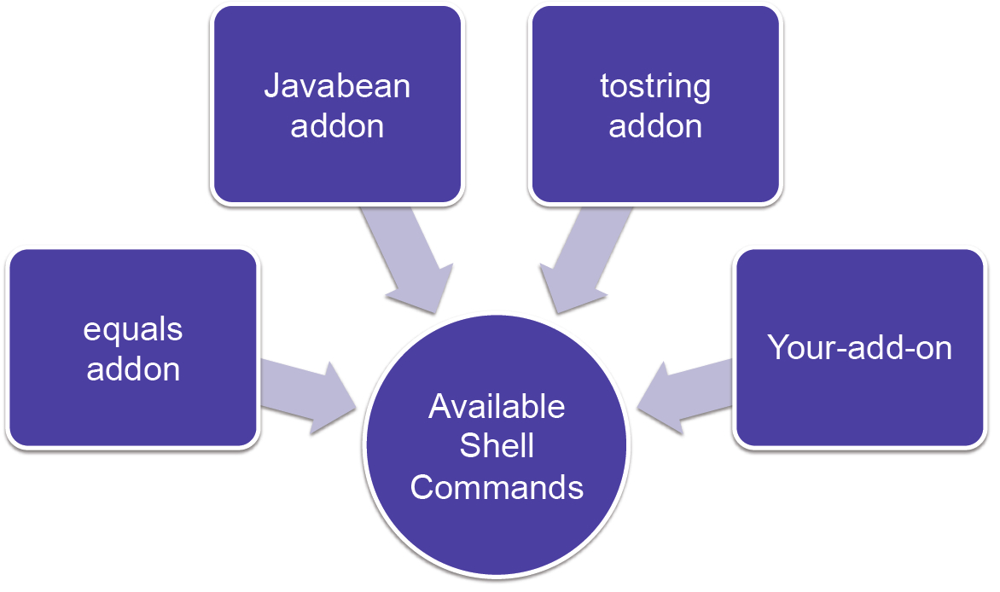

Set up a Spring Project
roo> project --topLevelPackage org.foo
--projectName conference-planner
roo> jpa setup --database HYPERSONIC_PERSISTENT
--provider HIBERNATE| z, ? | toggle help (this) |
| space, → | next slide |
| shift-space, ← | previous slide |
| d | toggle debug mode |
| ## <ret> | go to slide # |
| c, t | table of contents (vi) |
| f | toggle footer |
| r | reload slides |
| n | toggle notes |
| p | run preshow |
| P | toggle pause |

Director of Education Services, Chariot Solutions
More about me at my blog rimple.com/about-me
Command-Line Shell
Configures Projects
Provides maven-based builds
Generates code smartly
Geared toward Spring projects
roo> project --topLevelPackage org.foo
--projectName conference-planner
roo> jpa setup --database HYPERSONIC_PERSISTENT
--provider HIBERNATEroo> entity jpa --class ~.model.Conference
--testAutomatically
roo> entity jpa --class ~.model.Registration
--testAutomaticallyroo> focus --class ~.model.Conference
roo> field string --fieldName conferenceName
roo> field date --fieldName startDate
--type java.util.Date
roo> field set --fieldName registrations
--type ~.model.Registration
--cardinality ONE_TO_MANY --mappedBy conferenceroo> focus --class ~.model.Registration
roo> field string --fieldName firstName
roo> field string --fieldName lastName
roo> field reference --fieldName conference
--type ~.model.Conference
--cardinality MANY_TO_ONEroo> web mvc setup
roo> web mvc all --package ~.webJava-based recipes
Some installed with Roo, others are downloadable
You can go further... and write your own add-ons!
roo> osgi start --url pathosgi obr command setaddon command setroo> addon create simple --projectName simpleaddon
--topLevelPackage org.foo.barroo> addon create advanced --projectName advancedaddon
--topLevelPakage org.foo.barInter-Type Declarations
Separates features from boilerplate
100% compile-time - no runtime component
privileged aspect Course_Roo_ToString {
public String Course.toString() {
return ReflectionToStringBuilder
.toString(this,
ToStringStyle.SHORT_PREFIX_STYLE);
}
}@RooToString on entity

Bundle = Jar w/instructions (META-INF/MANIFEST.MF )OSGi Container - a runtime platform (Apache Felix)OSGi Shell - command line exposed by containerMETA-INF/MANIFEST.MF

Installs jQueryUI and associated images and theme files
Exposed by two commands
jquery setup - sets up jQueryjqueryui setup - installs jQuery UI$ mkdir jquery-addon
$ cd jquery-addon
$ roo
...
roo> addon simple create
--projectName jqueryaddon
--topLevelPackage org.sillyweasel.addons
jquery setup command@Component
@Service
public class JqueryaddonCommands
implements CommandMarker {
private Logger log =
Logger.getLogger(getClass().getName());
@CliCommand(value = "jquery setup",
help = "Setup jQuery")
public void sayHello() {
log.severe("jQuery installed.");
}
} roo> quit
$ mvn clean package
Build successful.
$ roo
roo> osgi start --url (full path to jar in ./target)
roo> jquery setup
jQuery installed. package org.sillyweasel.jqueryaddon;
public interface JqueryaddonOperations {
void setup();
}@Component and @Service expose this bean, `@Reference' injects another bean_
package org.sillyweasel.addons.jquery;
...
@Component
@Service
public class JqueryOperationsImpl
extends AbstractOperations
implements JqueryOperations {
@Reference
private ProjectOperations projectOperations;
public void setup() {...}
}setup() method in detailpublic void setup() {
String pathIdentifier =
pathResolver.getFocusedIdentifier(
Path.SRC_MAIN_WEBAPP, "js");
copyDirectoryContents("jquery-1.8.1.min.js",
pathIdentifier, true);
}copyDirectoryContents is a method of AbstractOperationssrc/main/resources *
└── org
└── sillyweasel
└── addons
└── jquery
└── jquery-1.8.1.min.js
Made available in JAR for copying into project
@Component and @Service
@Component provides lifecycle@Service provides component for injection@ReferenceJqueryaddonOperations.setup()@Component
@Service
public class JqueryaddonCommands
implements CommandMarker {
@Reference
private JqueryaddonOperations addonOperations;
@CliCommand(value = "jquery setup",
help = "Setup jQuery")
public void setup() {
// call delegate
addonOperations.setup();
}
}(See http://github.com/springsource/spring-roo)
@CliAvailabilityIndicator - Is the command (or list of commands) available?@CliCommand - Expose a command to the shell@CliOption - Expose command-line options for the given command@CliCommand(value = "coffeescript addjoinset", ...)
public void addJoinSet(
// one for each option...
@CliOption(
key = "joinSetId",
mandatory = true,
specifiedDefaultValue = "main") String joinSetId,
...) {
operations.addJoinSet(joinSetId, ...);
}@CliCommand(value = "say hello",
help = "Prints welcome message to the Roo shell")
public void sayHello(
@CliOption(key = "name",
mandatory = true,
help = "State your name") String name,
@CliOption(key = "countryOfOrigin",
mandatory = false,
help = "country") Country country) {...}Country enumpublic enum Country {
AUSTRALIA("Australia"),
UNITED_STATES("United States"),
GERMANY("Germany"), ...
private String countryText;
private Country(String value) {
Validate.notBlank(propertyName,
"Property name required");
this.value = value;
}
public String toString() {
return value;
}
}Converters
Target datatypes as Shell @CliOption param types
@Component and @Servicepublic interface Converter<T> {
T convertFromText(String value, Class<?> targetType,
String optionContext);
boolean getAllPossibleValues(
List<Completion> completions,
Class<?> targetType,
String existingData,
String optionContext,
MethodTarget target);
boolean supports(Class<?> type, String optionContext);
}This one does not use the option context data
convertFromTextMakes the input more flexible
public Boolean convertFromText(
final String value,
final Class<?> requiredType,
final String optionContext) {
if ("true".equalsIgnoreCase(value)
|| "1".equals(value)
|| "yes".equalsIgnoreCase(value)) {
return true;
}
else if ("false".equalsIgnoreCase(value)
|| "0".equals(value)
|| "no".equalsIgnoreCase(value)) {
return false;
}
...... else {
throw new IllegalArgumentException(
"Cannot convert " + value
+ " to type Boolean.");
}
}Show them
// in @CliOption
@CliOption(... optionContext = "path-a")
// in converter...
if (optionContext.equals("path-a")) {
... do something
}optionContext on @CliOption BigDecimal, BigInteger, Boolean, Character, Date, Double, Float, Integer, Long, Short, StringFileConverter can do completions based on files in the directoryLocale, Static Fields, EnumAvailableCommandsConverterShows how a service can be accessed by the converter
@Component
@Service
public class PgpKeyIdConverter
implements Converter<PgpKeyId> {
@Reference
private PgpService pgpService;
public PgpKeyId convertFromText(
final String value,
final Class<?> requiredType,
final String optionContext) {
return new PgpKeyId(value.trim());
}
... public boolean getAllPossibleValues(...) {
for (final PgpKeyId candidate :
pgpService.getDiscoveredKeyIds()) {
final String id = candidate.getId();
if (id.toUpperCase().startsWith(
originalUserInput.toUpperCase())) {
completions.add(new Completion(id));
}
}
return false; // can we dig deeper next time?
}@CliCommand, @CliOption, shell converters are the sameProjectManager Roo Service beanDependency - Maven dependenciesPlugin - Maven build plug-insProjectManager// Direct API call
projectOperations.addDependency(
projectOperations.getFocusedModuleName(),
"cglib", "cglib-nodep", "2.2.2"); Set<Dependency> dependencies = new HashSet<Dependency>();
// fill in from XML file, etc...
projectOperations.addDependencies(
projectOperations.getFocusedModuleName(),
dependencies);You can also pass a file/path into getConfiguration
String focusedModuleName =
projectOperations.getFocusedModuleName();
Element doc = XmlUtils.getConfiguration(getClass());
for (Element dependencyElement :
XmlUtils.findElements(
"/configuration/project/dependencies/dependency",
doc)) {
Dependency dependency =
new Dependency(dependencyElement);
projectOperations.addDependency(
focusedModuleName, dependency);
}<?xml version="1.0" encoding="UTF-8" standalone="no"?>
<configuration>
<project>
<dependencies>
<dependency>
<groupId>org.springframework.batch</groupId>
<artifactId>
spring-batch-admin-manager
</artifactId>
<version>1.0.0.RELEASE</version>
</dependency>
</dependencies>
</project>
</configuration>You can add plug-ins, properties, dependency management
Issues
--force option for your usersconfiguration.xml file to simplify loading your new POM settingsAbstractItdTypeDetailsProvidingMetadataItemprotected AddonsMetadata(
String identifier, JavaType aspectName,
PhysicalTypeMetadata governorPhysicalTypeMetadata) {
super(identifier, aspectName,
governorPhysicalTypeMetadata);
itdTypeDetails = builder.build();
if (isValid()) {
ensureGovernorExtends(
new JavaType("java.lang.Thread"));
ensureGovernorImplements(
new JavaType("java.io.Serializable"));
buildItd();
}MethodMetadataBuilder to build methodsbuilder.addMethod private MethodMetadataBuilder createThreadSpawner() {
final InvocableMemberBodyBuilder bodyBuilder =
new InvocableMemberBodyBuilder();
bodyBuilder.appendFormalLine(
"System.out.println(\"invoking thread!\");");
bodyBuilder.appendFormalLine(
"new Thread().start(this);");
bodyBuilder.appendFormalLine(
"System.out.println(\"thread spawned!\");");
... ...
return new MethodMetadataBuilder(
getId(),
Modifier.PUBLIC,
new JavaSymbolName("sayHello"),
JavaType.VOID_PRIMITIVE,
bodyBuilder);
}protected AsyncActionMetadata(...) {
super(identifier, aspectName,
governorPhysicalTypeMetadata);
itdTypeDetails = builder.build();
if (isValid()) {
...
}if (isValid()) {
ensureGovernorImplements(
new JavaType("java.lang.Runnable"));
JavaType physicalType =
governorPhysicalTypeMetadata.getType();
MethodMetadataBuilder threadRunMethodBuilder =
createThreadRunnerMethod(physicalType);
builder.addMethod(threadSpawnerBuilder);
buildItd();
}